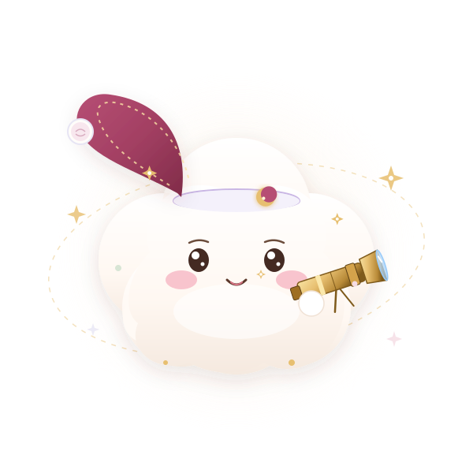
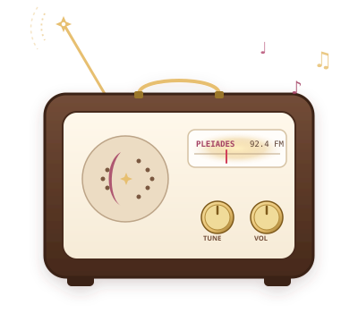
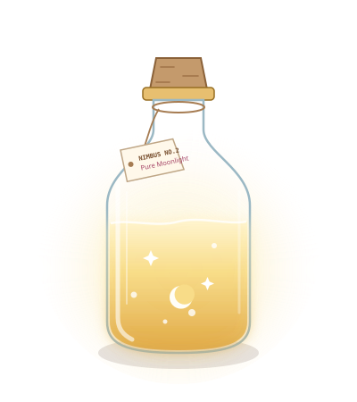
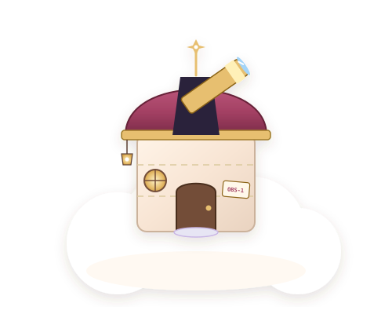

What am I?
A small cloud spirit with a big telescope and a very soft heart.
Specimen:
Spirito-Cumulus
Oh! Hello, stargazer. I'm Nimbus, a tiny cloud spirit who turns little wishes into constellations. Welcome to my cozy observatory perched above the sleepy world.

A few observations scribbled into the margins of my field notebook between midnight naps.
A small cloud spirit with a big telescope and a very soft heart.
Spirito-Cumulus
I chart constellations, collect wishes, and make the night feel friendly.
Starlight Navigation
I sneeze a little star whenever someone tells me a happy story.
Genuinely functional inventions crafted from starlight, brass wire, and cloud fluff.

“A pocket-sized lullaby made from the sounds of distant stars.”

“Little jars of bottled moonlight for dark and wobbly nights.”
“A tiny constellation map to help wishes find their way home.”
Every constellation begins with a single step into the dark.
“I was born on the quietest cloud in the sky. I had no map, no telescope, and absolutely no idea where the moon went during the day.”
“One evening, a little lost star asked me to help it find its family. I connected the dots, drew a constellation, and discovered that even the smallest light can guide someone home.”
“Now I keep a tiny observatory above the clouds. Every night, I collect wishes, draw dream maps, and leave a little light on for anyone who needs it.”

Every wish left here becomes a permanent glimmer in our midnight sky.
Write a small hope or dream. Nimbus will chart it among the stars!
“Even your smallest wish matters. Keep looking up. ♡”
Nimbus sneezed five glittering stars in joy just for you.